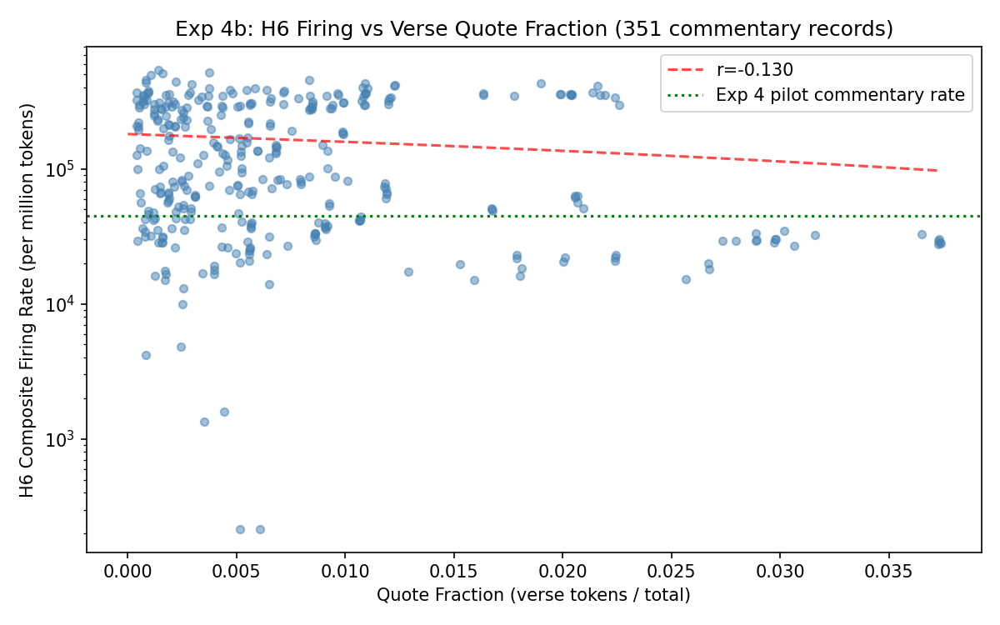

From the DeepSeek-V4-Flash-0731 interpretability project
30 windows (~16k tokens each) from Christian books containing KJV Bible quotations embedded in commentary prose. Each window contains both quoted verse and surrounding commentary. Question: does H6 fire on the verse portions, the commentary portions, or both?
| Group | n | Description | Digit density |
|---|---|---|---|
| KJV files (verse format) | 5 | Bible text with chapter:verse numbering | 2.3–6.1% |
| Commentary books (prose) | 24 | Sermons, theology with embedded Bible quotes | 0.0–1.0% |
| Group | n | Tokens | H6 composite (M) | vs. Bible verse |
|---|---|---|---|---|
| Pure Bible verse (core data) | 1,189 | 1,045,776 | 4.1 | — |
| KJV files (verse+apparatus) | 5 | 81,920 | 8,664 | 2,109× |
| Commentary books (prose+quotes) | 24 | 367,406 | 44,822 | 10,911× |
| Chart | What it shows |
|---|---|
| H6 comparison | H6 composite rates across 4 groups (log scale) |
| Per-anchor | Per-anchor H6 rates: verse vs commentary |
| Digit density scatter | Digit density vs H6, colored by text type |
Exp 4b addresses the pilot's limitations: 351 records, 5,156,659 tokens, 41,426 quote tokens across 18 sources, with annotated quote spans.
| Metric | Value |
|---|---|
| Records | 351 |
| Tokens | 5,156,659 |
| H6 rate (commentary prose) | 163,284/M |
| Quote fraction vs H6 correlation | r = −0.13 |
| Invariant violations | 0 |
The −0.13 correlation means more verse quotes → slightly less H6 firing, but the effect is weak. H6 fires on the prose context regardless of how much verse is quoted within it. This confirms the pilot finding at scale: H6 is a prose detector, not a verse detector or a "non-scripture" detector.

{kind=link}
{kind=link}
{kind=link}